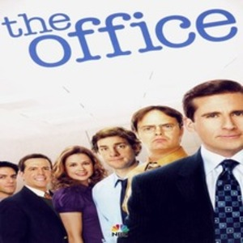

The Office
Gênero: comédia
Sinopse: No formato de pseudodocumentário, a série retrata o cotidiano de um escritório em Scranton, na Pensilvânia, filial da empresa fictícia Dunder Mifflin, de suprimento de papel. Michael Scott (Steve Carell) é um patrão insensível mas que se preocupa com o bem estar de seus empregados, enquanto a série traça um olhar sobre todos eles, destacando suas diferenças e particularidades.
Elenco
- John Krasinski como Jim Halpert;
- Jenna Fischer como Pam Beesly;
- Steve Carell como Michael Scott;
- Rainn Wilson como Dwight Schrute;